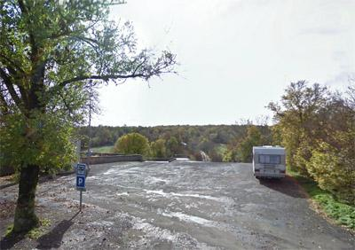
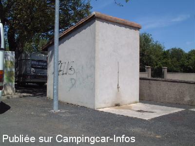

ASN = Aire de services avec stationnement nuit possible de :
SAINT JEAN ET SAINT PAUL
(N° 575)
Accès/adresse :
D516
Saint Jean d'Alcas
12500 SAINT JEAN ET SAINT PAUL
Saint Jean d'Alcas
12500 SAINT JEAN ET SAINT PAUL
Latitude : (Nord) 43.92636° Décimaux ou 43° 55′ 34′′
Longitude : (Est) 3.00873° Décimaux ou 3° 0′ 31′′
Tarif : Gratuit
Type de borne : Artisanale
Services :


Autres informations :
Ouvert du 01/06 au 30/09
En dehors de cette période demander à la mairie
Tél mairie : +33(0)565 991 479
http://www.aveyron.com/templier/alcas.html
Aire en pente, au sud du village à coté du cimetière

Le 24/05/2013 par lelito

Le 30/05/2006 par le.templier
de
Louisette
le 27/09/2015 :
Passage sur cette aire pour la nuit, calme certainement mais d'aucun attrait. Vidange des K 7 dans WC turc repoussant.
Terrain en pente plein de trous.
Nous sommes partis plus loin.
Passage sur cette aire pour la nuit, calme certainement mais d'aucun attrait. Vidange des K 7 dans WC turc repoussant.
Terrain en pente plein de trous.
Nous sommes partis plus loin.
de
Laurot Jean-François
le 09/05/2015 :
Aire impraticable transformée en dépot de chantier (Constaté en Mai 2015)
Aire impraticable transformée en dépot de chantier (Constaté en Mai 2015)
de
Daisy
le 08/06/2012 :
Aire très calme, ceux qui craignent la proximité des cimetières peuvent toujours aller au camping (mais voilà, il faut payer). Par ailleurs, le village présente un intérêt historique car c'est une place forte des "Templiers" et il est vraiment préservé à l'interieur des remparts.
Aire très calme, ceux qui craignent la proximité des cimetières peuvent toujours aller au camping (mais voilà, il faut payer). Par ailleurs, le village présente un intérêt historique car c'est une place forte des "Templiers" et il est vraiment préservé à l'interieur des remparts.
de
CASSAN Christian
le 01/05/2011 :
De passage à ce très jolie village au combien entretenu, nous avons fait une belle ballade à l'intérieur nous apprécions les belles et vielles pierres. Merci à la municipalité et à Madame le Maire d'avoir crée cette aire de camping car, propre(wc)eau potable, vidage des eaux usées et le tout gratuit.
Nous reviendrons et ferons part à nos amis de ce beau séjour en Aveyron.
De passage à ce très jolie village au combien entretenu, nous avons fait une belle ballade à l'intérieur nous apprécions les belles et vielles pierres. Merci à la municipalité et à Madame le Maire d'avoir crée cette aire de camping car, propre(wc)eau potable, vidage des eaux usées et le tout gratuit.
Nous reviendrons et ferons part à nos amis de ce beau séjour en Aveyron.
de
loulou38
le 02/10/2010 :
Aire super calme. Personnellement, la proximité d'un cimetière ne me gène pas, au contraire, on ne peut pas avoir de voisins aussi calmes ! Par contre, il n'y a rien à voir dans ce village.
Aire super calme. Personnellement, la proximité d'un cimetière ne me gène pas, au contraire, on ne peut pas avoir de voisins aussi calmes ! Par contre, il n'y a rien à voir dans ce village.
de
MAGILIUS
le 15/07/2009 :
De passage au mois de mai, aire sympathique mais en pente et derrière un cimetière, dommage. Pouquoi est-on souvent derrière un cimetière ? Office du Tourisme sympa avec invitation pour boire le café le matin. Très bonne fouace en vente à l'office du tourisme.
Nous ne sommes pas restés malgré le confort et le sympathique et unique CC d'un couple anglais ... car si vous me le permettez : ras le bol des cimetière!
De passage au mois de mai, aire sympathique mais en pente et derrière un cimetière, dommage. Pouquoi est-on souvent derrière un cimetière ? Office du Tourisme sympa avec invitation pour boire le café le matin. Très bonne fouace en vente à l'office du tourisme.
Nous ne sommes pas restés malgré le confort et le sympathique et unique CC d'un couple anglais ... car si vous me le permettez : ras le bol des cimetière!
de
donotdisturb
le 02/08/2008 :
Nuit super calme, à côté d'un cimetière. Seul inconvénient : les mouches... mieux vaut manger à l'intérieur.
Nuit super calme, à côté d'un cimetière. Seul inconvénient : les mouches... mieux vaut manger à l'intérieur.